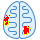

Rezonans Magnetyczny - informacja dla Pacjenta
MR głowy
MR przysadki mózgowej
MR tylnego dołu czaszki
MR środkowego dołu czaszki
MR nerwów wzrokowych i drogi wzrokowej
MR oczodołów
MR twarzoczaszki
MR nosogardła
Dyfuzja MR mózgu
Perfuzja MR mózgu
Traktografia MR mózgu
MR szyi
MR splotu barkowego
MR śródpiersia
MR miednicy mniejszej
MR gruczołu krokowego
MR kręgosłupa w odcinku szyjnym (C)
MR kręgosłupa w odcinku piersiowym (Th)
MR kręgosłupa w odcinku lędźwiowo-krzyżowym (L-S)
MR kości

MR stawów: kolanowego, barkowego, skokowego, łokciowego, nadgarstka i innych
MR narządów jamy brzusznej i przestrzeni zaotrzewnowej
Cholangiografia MR
Angiografia mózgowa MR
Angiografia tt. szyjnych
Angiografia łuku aorty
Angiografia aorty brzusznej
Angiografia miednicowo-kończynowa
MR serca
MR płodu
Mammografia MR
Spektroskopia MR
Badania czynnościowe ośrodkowego układu nerwowego fMRI
Badania MR całego ciała